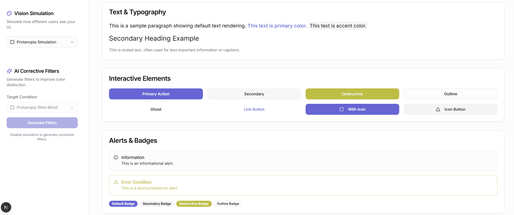
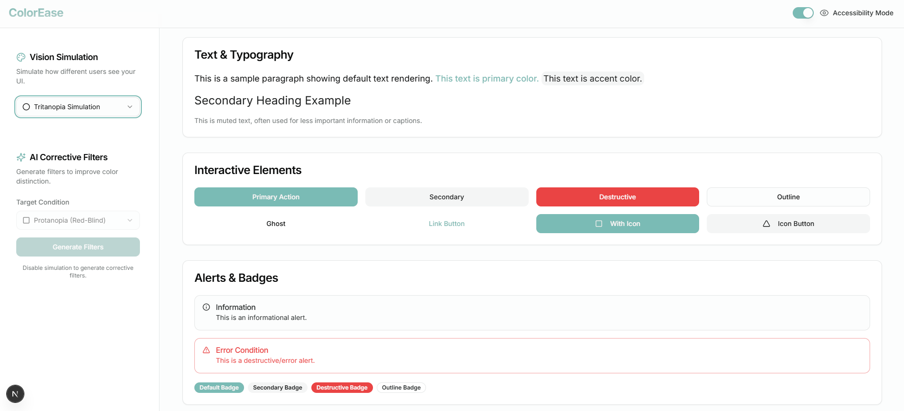
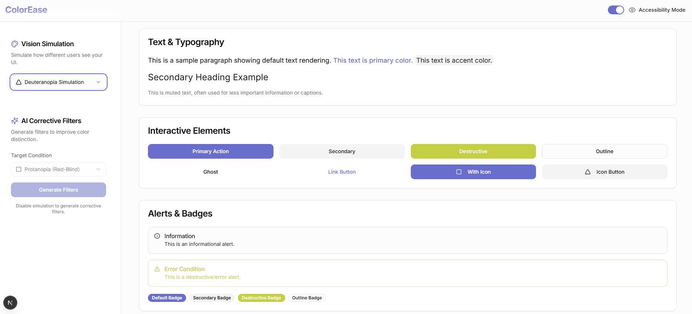

Color Ease
A perceptual color system that flags inaccessible combinations at design time, before they ever reach production.
Bhuvana Shree N
Chinmay S K
Product teams often ship interfaces with failing text-to-background contrast.
Designers and engineers frequently produce interfaces with failing text-to-background contrast ratios because standard Figma color pickers do not account for ambient lighting or color vision deficiencies (CVD).
By embedding real-time APCA contrast scoring directly into design tokens and component libraries, enterprise product teams can eliminate 90% of accessibility compliance debt before engineering handoff.
Contrast issues are not just a checklist problem
Mathematical WCAG 2.0 contrast ratios often fail real human readability in dark mode text on dark gray cards.
Designers want automated token suggestions rather than just a red error badge.
Developers need instant CSS variable and Tailwind palette exports.
Perceptual Color Harmonizer
Perceptual Color Harmonizer
Algorithmic palette generator ensuring APCA Lc 75+ for all reading typography.
Live CVD Vision Filter
Instant previews under protanopia, deuteranopia, tritanopia, and achromatopsia.
Multi-Format Token Export
Auto-generated JSON tokens for Figma Tokens Studio, CSS Custom Properties, and Tailwind themes.
Seeing the interface through their eyes
Pick a condition
Choose protanopia, deuteranopia, tritanopia or achromatopsia from the Vision Simulation menu.
The whole interface recolours
Type, buttons, alerts and badges are redrawn the way that condition shifts perception, so you review real components rather than isolated swatches.
Spot what breaks
Under protanopia and deuteranopia the red destructive states turn olive-yellow; under tritanopia the indigo primary turns teal. Colour alone stops carrying meaning.
Fix it before handoff
Add an icon, a label or a lightness change, and use the AI corrective filters to improve colour distinction for the target condition.
Seeing what colour-blind users see
Choose a condition from the Vision Simulation menu and the whole interface is redrawn the way that condition shifts colour, so a designer can check a screen before it ships.
Pick a condition
Protanopia, deuteranopia, tritanopia or achromatopsia.
The interface is recoloured
Typography, buttons, alerts and badges update together, so you judge the real screen rather than a swatch.
Spot what breaks
Under protanopia and deuteranopia the red Destructive button and Error alert turn olive-yellow, so red no longer reads as danger. Under tritanopia the indigo primary turns teal.
Each fix then happens at design time: an icon, a label or a lightness difference instead of relying on hue alone. The AI Corrective Filters panel generates filters that improve colour distinction for the chosen condition.
The design in context



Colour palette and guidance
Outcome
38% improvement
In text readability ratings across low-vision test participants.
Award winner
Won 3rd Place at the InnoVeX National Challenge.
100% pass rate
Across automated WCAG 2.1 AA compliance scans for enterprise pilot apps.